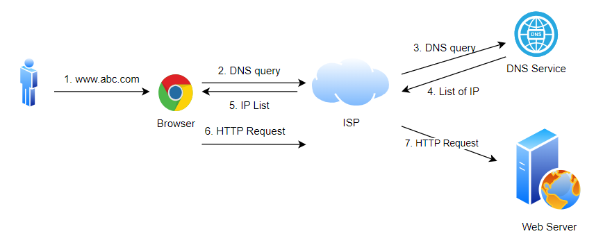

What is DNS?
The domain name system (DNS) is the Internet’s naming service that maps human-friendly domain names to machine-readable IP addresses. When a user enters a domain name in the browser, the browser has to translate the domain name to IP address by asking the DNS infrastructure. Once the desired IP address is obtained, the user’s request is forwarded to the destination web server.
DNS translates domain names (like www.example.com) into IP addresses (like 192.0.2.1), which computers use to identify each other on the network. DNS acts like the phonebook of the internet, mapping domain names to IP addresses. The entire process happens very quickly, so the user experiences minimal delay
DNS Hierarchy
DNS operates on a hierarchical structure, with the root at the top, followed by top-level domains (TLDs) (like .com, .org), second-level domains (like example in example.com), and so on.
DNS translates domain names (like www.example.com) into IP addresses (like 192.0.2.1), which computers use to identify each other on the network. DNS acts like the phonebook of the internet, mapping domain names to IP addresses. The entire process happens very quickly, so the user experiences minimal delay
DNS Components:
- DNS Resolver: A client-side service that initiates and sequences DNS queries that ultimately lead to a domain name being translated to an IP address.
- DNS Root Server: The top-level DNS server that contains information about TLDs and directs queries to appropriate TLD servers.
- TLD Name Server: These servers store information about second-level domains and direct queries to authoritative name servers.
- Authoritative Name Server: These servers contain the actual DNS records for a domain and return the corresponding IP address.
DNS Resolution Process?
- When a user enters a domain name in the browser, the DNS resolution process begins.
- The user's device sends a DNS query to the local DNS resolver (often provided by the ISP).
- The DNS resolver first checks its cache to see if it has a recently stored response for the domain. If found, the cached result is returned to the user.
- If the result is not cached, the DNS resolver queries one of the root DNS servers to find the TLD server responsible for the domain.
- The root server responds with the address of the TLD server (e.g., .com TLD server) that handles the domain.
- The DNS resolver then queries the authoritative name server for the domain name to get the corresponding IP address.
- The authoritative name server responds with the IP address of the requested domain.
- The DNS resolver caches the response for future queries and returns the IP address to the user's device.
- The user's browser uses the IP address to connect to the web server and load the website.
DNS in AWS (Amazon Web Services)
Amazon Route 53: AWS offers a managed DNS service called Amazon Route 53. It provides highly available and scalable Domain Name System (DNS) services, which can be used to route end-user requests to various AWS services, on-premises resources, or any web application.
Interview Questions and Answers
Q1: How does DNS caching work, and how can it impact the resolution process in both positive and negative ways?
DNS caching involves storing DNS query results temporarily on various levels (browser, OS, ISP, etc.) to speed up subsequent requests for the same domain.
Caching reduces latency, decreases the load on DNS servers, and improves the overall user experience.
- Reduced Latency: Queries for cached domains resolve faster because they don’t need to go through the entire DNS lookup process.
- Lower Server Load: Reduces the number of queries sent to authoritative DNS servers, decreasing their load.
- Outdated Records: If the DNS records change before the cache expires (based on TTL), users might be directed to old, incorrect IP addresses.
- Prolonged Downtime: In case of an IP change, users might still reach the old, possibly down, server until the cache expires.
Q2: What is the difference between an A record and a CNAME record, and when should you use one over the other?
A Record :
- Maps a domain name directly to an IP address.
CNAME Record :
- When you want to map one domain to another, such as mapping www.example.com to example.com
- It’s useful when you want to alias one domain to another without creating separate DNS records for each subdomain.
Q3: How would you troubleshoot a situation where a user can access a website via IP address but not through its domain name?
- Use tools like nslookup, dig, whois to verify if the domain’s DNS records are correctly configured and propagated.
- Ensure that the A record for the domain points to the correct IP address.
- The user’s system might be serving a stale DNS record. Clear the DNS cache (ipconfig /flushdns on Windows, sudo killall -HUP mDNSResponder on macOS).
- Ensure the user's device is using the correct DNS server and that it’s operational. They can try switching to a public DNS server like Google’s (8.8.8.8).
- Check if the domain might be blocked by a firewall or ISP DNS filtering.
Q4: Explain how DNS load balancing works and describe a scenario where it might fail to distribute traffic evenly.
- DNS load balancing distributes traffic across multiple servers by associating a single domain with multiple IP addresses (using multiple A records).
The DNS server can return different IP addresses in response to DNS queries, distributing the load across the available servers.
- If a DNS resolver or client caches an IP address for too long, subsequent traffic might not be distributed evenly.
This can lead to one server being overloaded while others remain underutilized.
- Sticky Sessions: Some clients may repeatedly connect to the same IP address due to cached results, leading to uneven load distribution.
Q5: List global DNS providers
- Amazon Route 53 (AWS)
- Google Cloud DNS
- Cloudflare DNS
- Microsoft Azure DNS
- Dyn (now part of Oracle)
- Verisign
- Akamai
Q6: Tools and commands are commonly used while troubleshooting DNS problems
- nslookup example.com
purpose: Query DNS records from a specific DNS server. (nslookup example.com 8.8.8.8)
- dig example.com
purpose: A powerful DNS query tool to retrieve information about DNS records.
- host example.com
purpose: A simple command-line utility to perform DNS lookups. (Find nameservers for a domain: host -t ns example.com)
- ping example.com
purpose: Check the network connection to a specific IP or domain name
- On Linux/macOS: traceroute example.com
purpose: Trace the path packets take from your system to a domain name.
- On Windows: ipconfig /flushdns
purpose: Clear the DNS resolver cache to ensure that the latest DNS information is fetched.
- netstat -nr
Purpose: Display the current network routing table.
DNS caching involves storing DNS query results temporarily on various levels (browser, OS, ISP, etc.) to speed up subsequent requests for the same domain. Caching reduces latency, decreases the load on DNS servers, and improves the overall user experience.
- Reduced Latency: Queries for cached domains resolve faster because they don’t need to go through the entire DNS lookup process.
- Lower Server Load: Reduces the number of queries sent to authoritative DNS servers, decreasing their load.
- Outdated Records: If the DNS records change before the cache expires (based on TTL), users might be directed to old, incorrect IP addresses.
- Prolonged Downtime: In case of an IP change, users might still reach the old, possibly down, server until the cache expires.
A Record :
- Maps a domain name directly to an IP address.
- When you want to map one domain to another, such as mapping www.example.com to example.com
- It’s useful when you want to alias one domain to another without creating separate DNS records for each subdomain.
- Use tools like nslookup, dig, whois to verify if the domain’s DNS records are correctly configured and propagated.
- Ensure that the A record for the domain points to the correct IP address.
- The user’s system might be serving a stale DNS record. Clear the DNS cache (ipconfig /flushdns on Windows, sudo killall -HUP mDNSResponder on macOS).
- Ensure the user's device is using the correct DNS server and that it’s operational. They can try switching to a public DNS server like Google’s (8.8.8.8).
- Check if the domain might be blocked by a firewall or ISP DNS filtering.
- DNS load balancing distributes traffic across multiple servers by associating a single domain with multiple IP addresses (using multiple A records). The DNS server can return different IP addresses in response to DNS queries, distributing the load across the available servers.
- If a DNS resolver or client caches an IP address for too long, subsequent traffic might not be distributed evenly. This can lead to one server being overloaded while others remain underutilized.
- Sticky Sessions: Some clients may repeatedly connect to the same IP address due to cached results, leading to uneven load distribution.
- Amazon Route 53 (AWS)
- Google Cloud DNS
- Cloudflare DNS
- Microsoft Azure DNS
- Dyn (now part of Oracle)
- Verisign
- Akamai
- nslookup example.com
purpose: Query DNS records from a specific DNS server. (nslookup example.com 8.8.8.8) - dig example.com
purpose: A powerful DNS query tool to retrieve information about DNS records. - host example.com
purpose: A simple command-line utility to perform DNS lookups. (Find nameservers for a domain: host -t ns example.com) - ping example.com
purpose: Check the network connection to a specific IP or domain name - On Linux/macOS: traceroute example.com
purpose: Trace the path packets take from your system to a domain name. - On Windows: ipconfig /flushdns
purpose: Clear the DNS resolver cache to ensure that the latest DNS information is fetched. - netstat -nr
Purpose: Display the current network routing table.